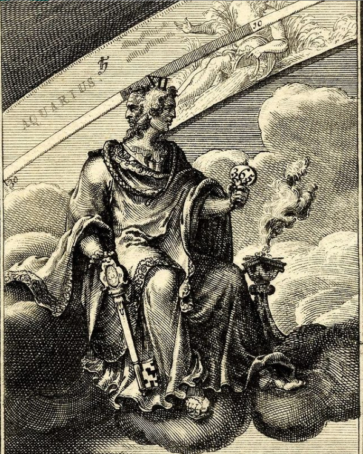

January is named after the Roman god Janus, who had two faces so he could see the future and the past at the same time.
This print was made by Dutch artist Jacobus Harrewyn in 1698 – he created a series of prints based on the months of the year, all of which are available to explore on our Collection online database at britishmuseum.org/collection
Have you made any new year’s resolutions this year?
🔎 Jacobus Harrewyn (1660/1–1732/40), ‘Ianus. Ianuarius’. Engraving, 1698.